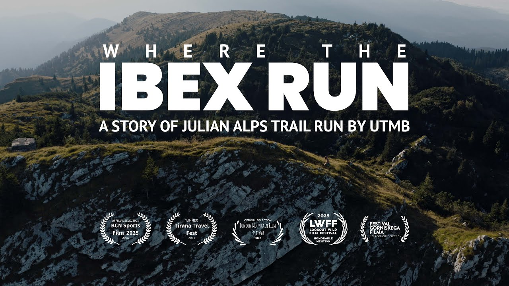

Shoe
Use a real mountain trail shoe with reliable wet rubber, stable platform, secure lockdown, toe protection, and enough cushion for hard valley sections.

Nocturne to Limestone • Radovljica → Kranjska Gora
A race-day field guide for visualizing every aid interval, every kilometer, and every evidence caveat on the Julian Alps Trail 120K.
Race-day essentials
The official route truth is strong. The surface model is deliberately adversarial: 1,091 micro-segments, 386 matched OSM ways, local guide context where available, and explicit caveats where the claim is still inferred.
Official payload, aid points, cutoffs, services and matching GPX files are direct evidence. Hash: 971fbad73773...
Every kilometer is derived from micro-segments. Bare OSM/path classes are capped as inference, not promoted to proof.
Visuals cover 44.6% as broad official or adjacent-route context; none are geotagged proof for exact route meters.
Official totals are +5,893/-5,572 m. Raw GPX edge sum is +6,137/-5,815 m and is labeled separately.
Aid interval planner
Each interval pairs official services and cutoffs with modeled surface, grade, risk, and the next practical decision.
Critical sections
Surface & gear
Modeled hard surface matters, but the decision core is wet roots, steep forest track, grass, limestone and late-race fatigue.
Use a real mountain trail shoe with reliable wet rubber, stable platform, secure lockdown, toe protection, and enough cushion for hard valley sections.
Worth carrying if already practiced. Best payoff: Žirovnica to Stol and the long technical descent toward Dovje. Stow through runnable corridors.
The 21:00 start makes the first half materially night-affected for many runners. Main lamp throw matters more than a minimal compliance light.
Kilometer-by-kilometer
Filter the course by aid interval, footing, evidence quality, or gear concern. Select any kilometer to inspect its micro-segments.
Evidence room
Direct official truth, GPX geometry, local route guides, visual context, OSM inference, and caveats are separated.